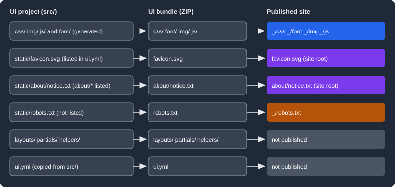

Stylesheets, Fonts and Static Files
|
This content was generated with the assistance of AI and should be verified against the official documentation before being relied on in production. |
A UI bundle controls how an Antora site looks through three kinds of assets: stylesheets, fonts and images, and plain static files such as a favicon. This page explains how the Antora Default UI builds each of them and how to change them in a custom UI. It was written against Antora 3.2.1 and the Default UI checked out at commit 0e38223a (the project publishes no tags), and checked on 2026-10-26. The examples customise a copy of the Default UI for the Pocket Units documentation, a tiny units-conversion library, and were built into a real Antora site. The surrounding project is described in Building a Custom UI and the templates that use these assets in Templates and the UI Model.
How the UI build treats assets
The Default UI is a Gulp project. Its build task (gulp.d/tasks/build.js) reads these folders under src/ and writes
them into the bundle:
Source in src/ |
Processing | Location in the bundle |
|---|---|---|
|
PostCSS: imports are inlined, custom properties resolved, vendor prefixes added, output minified (not in preview) |
|
|
copied as is |
|
Fonts referenced with a |
copied by the build into the bundle |
|
|
optimised with imagemin (not in preview) |
|
|
scripts bundled, templates copied |
same names |
|
copied, dotfiles included, with |
root of the bundle |
|
copied |
root of the bundle |
Antora then decides what to publish. The folders helpers, layouts and partials and the file ui.yml are used to
compose pages and configure the UI, so they are never copied to the site. Every other file or folder in the bundle is
a static file and is copied into the UI output directory of the site, which is _ by default, keeping its relative
path. Files and folders that start with a dot are ignored unless they are listed in static_files. The ui.yml
descriptor can promote chosen static files from the UI output directory to the site root, as described in
Static files.

The figure follows six kinds of files from the UI project to the published site: the intrinsic asset folders and
unlisted static files land under _, listed static files land at the site root, and templates and the descriptor are
not published.
CSS structure
src/css/site.css is the only entry point. It contains nothing but @import lines, in this order in the Default UI:
@import "typeface-roboto.css";
@import "typeface-roboto-mono.css";
@import "vars.css";
@import "base.css";
@import "body.css";
@import "nav.css";
@import "main.css";
@import "toolbar.css";
@import "breadcrumbs.css";
@import "page-versions.css";
@import "toc.css";
@import "doc.css";
@import "pagination.css";
@import "header.css";
@import "footer.css";
@import "highlight.css";
@import "print.css";Each file styles one area of the page: nav.css the navigation tree, toolbar.css the bar above the article,
doc.css the article body produced from AsciiDoc, highlight.css the code highlighting theme, print.css the print
layout, and so on. Order matters, because later rules win at equal specificity; a file you add last therefore
overrides earlier ones. The build combines everything into one minified css/site.css so the browser makes a single
request. The Default UI does not provide every selector of the Asciidoctor default stylesheet, so a selector missing
from the page may need adding to your own CSS.
PostCSS plugins
The build runs these plugins in order: postcss-import (inlines @import), a rule that updates the file timestamp
so incremental rebuilds notice changes in imported files, postcss-url (copies npm fonts), postcss-custom-properties,
postcss-calc (preview only), autoprefixer, and cssnano (production only). The two that matter most when you
customise are explained below.
CSS custom properties
vars.css declares every colour, font, size and spacing as a custom property on :root, and the other stylesheets
only use var(--name). The groups, in file order, are: colour palette (--color-white, --color-smoke-*,
--color-gray-*, --color-jet-*, --color-black), fonts (--rem-base, --body-font-size, --body-font-family,
--monospace-font-family), base (--body-background, --panel-background, --panel-border-color, scrollbar colours),
navbar, nav, toolbar, admonitions (--note-color, --tip-color, --warning-color and so on), doc (links, headings,
code, tables, quotes), toc, footer, dimensions (--navbar-height, --nav-width, --doc-max-width) and stacking
(--z-index-*). Changing a design therefore means editing values in one file:
:root {
--body-font-family: "Open Sans", "Roboto", sans-serif;
--link-font-color: #0b5394;
--navbar-background: #0b2540;
}Variables are inlined in the production bundle
The build calls postcssVar({ preserve: preview }). In production (gulp bundle) preserve is false, so
postcss-custom-properties replaces every var() that refers to a :root declaration with the literal value and the
declarations disappear from the output. This was observed by building the Default UI with a dark override and
reading the resulting css/site.css: the output contained body{background:#fff;color:#222;...} with no var(), while
the @media (prefers-color-scheme: dark) block with the new :root values was kept but had nothing to override.
The consequence is that a variable override placed in a media query has no effect in the bundle unless you change the
build or write full selectors. In the live gulp preview build preserve is true, so the same CSS appears to work
there, which makes the difference easy to miss.
Dark mode
The Default UI has no dark theme: no stylesheet contains prefers-color-scheme. Adding one takes two steps in a
custom UI. First keep the variables at runtime by passing preserve: true to the plugin in gulp.d/tasks/build.js:
postcssVar({ preserve: true }),With preserve: true each declaration is emitted twice, the static fallback first and the var() version second.
Building the bundle after this change produced body{background:#fff;background:var(--body-background);...}, because
both forms are kept. Second, add a stylesheet that redefines the variables for dark
colour schemes and import it last (before print.css):
@media (prefers-color-scheme: dark) {
:root {
--body-background: #121212;
--body-font-color: #e0e0e0;
}
}@import "dark.css";Source: MDN: prefers-color-scheme
A complete dark theme redefines more than two variables: the panels, navbar, nav, doc and code colours, the
--example-background and --table-* values, and the code highlighting colours in highlight.css, which are
hard-coded hex values and not variables. This example only changes the body colours, builds, and was not opened in a
browser, so the visual result of a full theme was not evaluated. A user-controlled theme toggle needs a script that sets
a class on the html element and rules scoped to that class; the Default UI provides none.
Fonts
The Default UI ships Roboto and Roboto Mono from the npm packages @fontsource/roboto and
@fontsource/roboto-mono (version ~4.5 in its package.json). Each weight and style has its own @font-face in
typeface-roboto.css and typeface-roboto-mono.css, with woff2 first and woff as a fallback, and
unicode-range so the browser downloads only the subsets a page needs. The bundle holds the fonts in font/, and
the CSS refers to them relatively, so no request leaves the site.
Adding an npm-managed font
Install the font package with a pinned version, declare the faces in a new stylesheet and use the ~ prefix, which
the build recognises for URLs such as ~@fontsource/open-sans/files/...woff2: it copies the file into the bundle
font/ folder and rewrites the URL.
npm i --no-save @fontsource/open-sans@4.5.14@font-face {
font-family: "Open Sans";
font-style: normal;
font-weight: 400;
src:
url(~@fontsource/open-sans/files/open-sans-latin-400-normal.woff2) format("woff2"),
url(~@fontsource/open-sans/files/open-sans-latin-400-normal.woff) format("woff");
}Import it next to the other typefaces in site.css (@import "typeface-open-sans.css";) and put the family at the
front of the stack in vars.css with --body-font-family: "Open Sans", "Roboto", sans-serif;. Use npm i --save
instead of --no-save in a real project so the dependency is recorded in package.json. After npx gulp bundle the
bundle contained font/open-sans-latin-400-normal.woff and font/open-sans-latin-400-normal.woff2, and the
Antora site built from it had both under _/font/.
Declare one @font-face for every weight and style you use, including italic and bold; a missing one makes the
browser synthesise it. The pattern that matches npm fonts is ~<package>/.../files/<name>.(ttf|woff|woff2), so
the font folder inside the package must be called files and be reachable through a path containing font or
typeface in the package name, which is true for the @fontsource packages.
Adding a font file by hand
Put the files in src/font/ and refer to them relatively from the stylesheet:
@font-face {
font-family: "Open Sans";
font-style: normal;
font-weight: 400;
src: url(../font/open-sans-latin-400-normal.woff2) format("woff2");
}The build copies font/*.ttf, font/*.woff and font/*.woff2, so other formats in that folder are ignored. This
manual variant was not built here; it uses the same copy rule as the files listed in the table above. Loading a font
from a CDN such as Google Fonts works with a <link> in head-styles.hbs or head-meta.hbs, but it adds a
third-party request on every page and a privacy consideration, which self-hosting avoids.
Images
Icons and other images that the stylesheet needs live in src/img/: the Default UI has back.svg, caret.svg,
chevron.svg, home.svg, home-o.svg, menu.svg and the sprite octicons-16.svg. CSS refers to them with
url(../img/menu.svg) and a fragment selects a symbol of a sprite (../img/octicons-16.svg#view-unfold). In a
production build the images are optimised by imagemin (gifsicle, jpegtran, optipng and svgo, keeping the viewBox
and ids that start with icon- or view-); in preview they are copied unchanged. From templates, refer to a
bundled image with the uiRootPath variable, for example <img src="{{{uiRootPath}}}/img/logo.svg" alt="Pocket Units">,
so the path is correct from any page depth.
Images that belong to the documentation content, such as screenshots and figures, do not go in the UI. They are
AsciiDoc image resources under modules/<module>/images/ and are rendered with image:: macros.
Static files
A static file is anything the bundle provides that Antora copies verbatim. The Default UI build supports an optional
src/static folder for this: its contents, including nested folders and dotfiles, are copied to the root of the
bundle with static removed from the path.
The ui.yml descriptor and static_files
ui.yml is the UI descriptor, a YAML file at the root of the bundle. Its static_files key is a list of exact
relative paths or globs, without a leading slash. The matching files are published at the site root instead of under
_. The rules, from the official documentation, are:
-
An entry must match files, not folders; a bare folder name such as
aboutdoes nothing. -
folder/*matches the files in a folder andfolder/**matches files at any depth. Promotingabout/*also copies theaboutfolder itself. -
Wildcards never match dotfiles. A dotfile must be listed by its exact path.
-
Unlisted static files stay under the UI output directory, and unlisted dotfiles are ignored.
The example below adds three files to the Pocket Units UI: a favicon, a notice under about/, and a hidden file, and
promotes all three.
mkdir -p src/static/about
printf 'Pocket Units docs UI\n' > src/static/about/notice.txt
printf '<svg xmlns="http://www.w3.org/2000/svg" viewBox="0 0 16 16"><rect width="16" height="16" rx="3" fill="#1565c0"/></svg>\n' > src/static/favicon.svg
touch src/static/.well-known-teststatic_files:
- favicon.svg
- about/*
- .well-known-testTo use the favicon, reference it from src/partials/head-icons.hbs. Promoted files are at the site root, so the link
uses siteRootPath; an unpromoted static file would use uiRootPath:
<link rel="icon" href="{{{siteRootPath}}}/favicon.svg" type="image/svg+xml">Running npx gulp bundle printed Finished 'bundle' and the archive contained favicon.svg, about/notice.txt,
.well-known-test and ui.yml. Building a two-component Pocket Units site with that bundle produced this layout
(ls -a build/site):
.
..
.well-known-test
404.html
_
about
favicon.svg
index.html
pocket-units
shared
sitemap-pocket-units.xml
sitemap-shared.xml
sitemap.xmlui.yml is not in the output, and every page contained <link rel="icon" href="../../favicon.svg" ...> produced
by siteRootPath, which Antora sets to a path relative to the page (here two levels up for pocket-units/2.0/).
Static files from the playbook
The playbook can add or override files of a bundle without rebuilding it, through ui.supplemental_files. If the
bundle already has a ui.yml, the supplemental ui.yml replaces it entirely, so it must repeat the existing
static_files entries. This site uses that mechanism to publish .nojekyll and ads.txt at the site root: its
playbook supplies a ui.yml listing both and the two files as virtual files. See
Supplemental UI for the full rules.
Pitfalls and version notes
-
Edits to
vars.cssthat work ingulp previewbut not in the bundle usually mean variable inlining; see Variables are inlined in the production bundle. -
A glob that matches only a folder promotes nothing, and no error is reported. List files (
about/*) rather than the folder (about). -
Dotfiles such as
.nojekyllneed an exact entry instatic_files;*skips them. -
Remote bundles are cached by URL; after changing the bundle, rebuild with
snapshot: trueand--fetchor clear the cache, as described in Publishing a UI Bundle. -
The Default UI in
0e38223apins@fontsource/robototo~4.5; a newer major changes the file names, so keep the~URLs in step with the installed package. -
The
src/staticfolder is a feature of the Default UI build, not of Antora. A UI built with another toolchain produces the same result by placing the files at the bundle root and listing them inui.yml. -
Search needs an input and scripts from the UI as well; those are covered in Search and Analytics Integration.